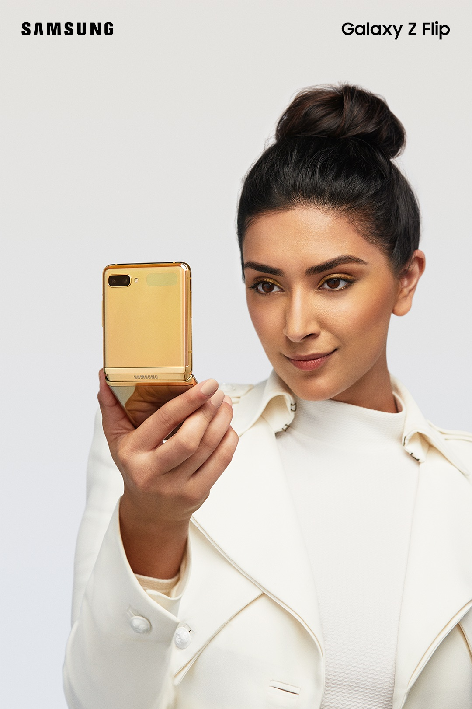
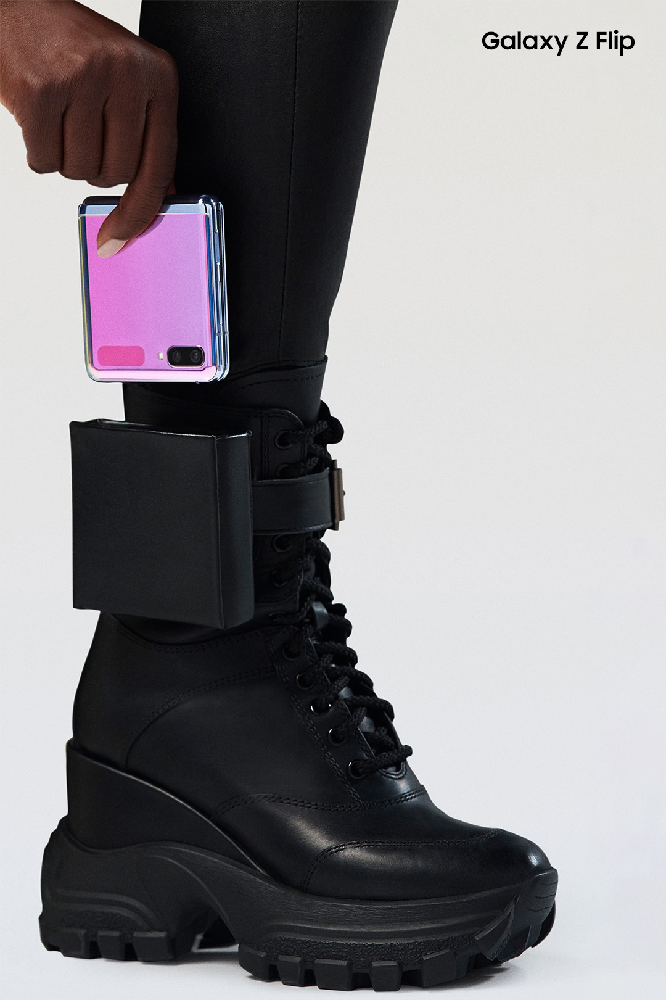
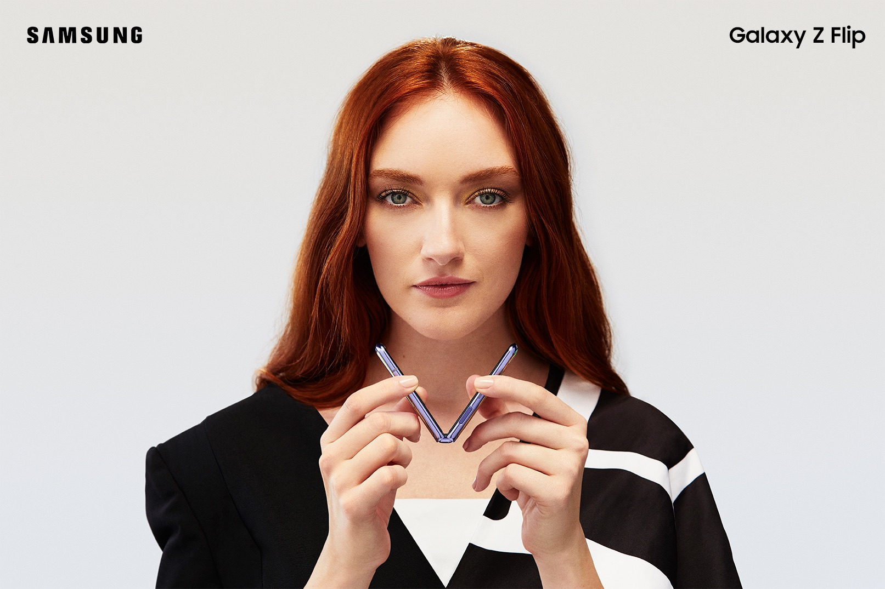

Z Flip Global Launch
When Samsung launched the Z Flip, its most compact foldable phone yet, it was set to disrupt the fashion world. Or at least, the relationship between tiny pockets and smartphones. That’s what led Katie Gough and I to the idea behind this social campaign: fashion-world-adjacent ads, disrupted by the Z Flip.
This was my first production, in my first month working (post-intership) at Eleven.



Agency — Eleven
Creative Director — Matthew Wakeman
Creative Lead — Ryan Holland
Art Director — Katie Gough
EP — Jonathan Matthews
PRODUCTION — Gentleman Scholar
DIRECTOR — Will Campbell/Chris Finn
DP — Shane Sigler
EDITORS — Jason Webb, Nathaniel Park
PHOTOGRAPHER — Christopher Shintani